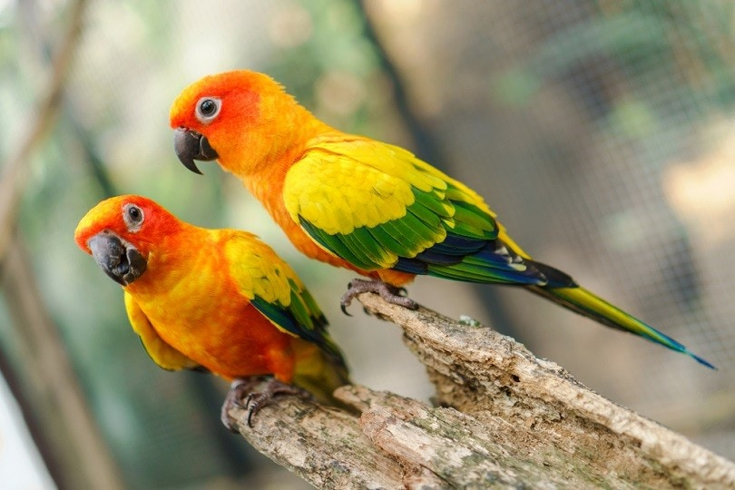
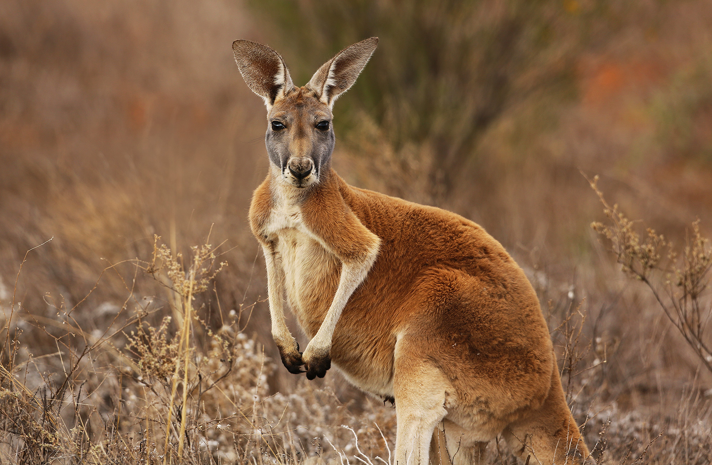
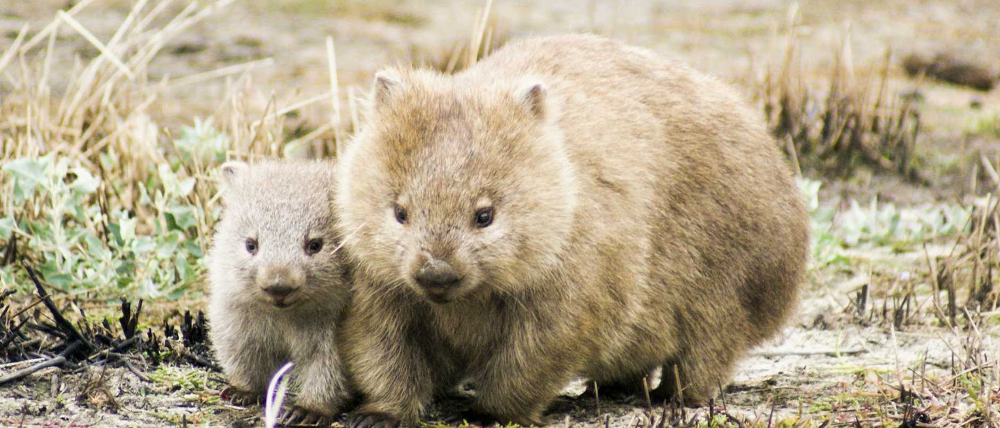

little cakes . dough . oven . dough . meat .The beagle is a breed of small scent hound, similar in appearance to the much larger foxhound. The beagle was developed primarily for hunting hare (beagling). Possessing a great sense of smell and superior tracking instincts, the beagle is the primary breed used as a detection dog for prohibited agricultural imports and foodstuffs in quarantine around the world. The beagle is intelligent. It is a popular pet due to its size, good temper, and a lack of inherited health problems.
The modern breed was developed in Great Britain around the 1830s from several breeds, including the Talbot Hound, the North Country Beagle, the Southern Hound, and possibly the Harrier.
Beagles have been depicted in popular culture since Elizabethan times in literature and paintings, and more recently in film, television, and comic books.
A Bichon Frise (/ˈbiːʃɒn ˈfriːz/ or /ˈbiːʃɒn frɪˈzeɪ/; from French: bichon à poil frisé, French pronunciation: [biʃɔ̃ fʁize], meaning 'curly haired dog') is a small breed of dog of the bichon type.
The French word bichon comes from Middle French bichon ('small dog'), a diminutive of Old French biche ('female dog', cognate with English bitch), from Old English bicce, and related to other Germanic words with the same meaning, including Old Norse bikkja, and German Betze.
Some speculate the origin of bichon to be the result of the apheresis, or shortening, of the word barbichon ('small poodle'), a derivative of barbiche ('shaggy dog'); however, this is likely impossible, since the word bichon (attested 1588) is older than barbichon (attested 1694).
While the English name for the breed, Bichon Frise, is derived from the French bichon à poil frisé meaning 'curly haired small dog', the usual English spelling does not include the diacritic (Bichon Frise instead of Bichon Frisé).
The Tibetan Terrier is a medium-sized breed of dog that originated in Tibet. Despite its name, it is not a member of the terrier group. The breed was given its English name by European travelers due to its resemblance to known terrier breeds.
The Tibetan name for the breed, Tsang Apso, roughly translates to "shaggy or bearded ("apso") dog, from the province of Tsang". Some old travelers' accounts refer to the dog as Dokhi Apso or "outdoor" Apso, indicating a shaggy or bearded working dog which lives outdoors.
Historically, Tibetan Terriers were kept as good luck charms, mascots, watchdogs, herding dogs, and companions. They were also used to retrieve articles that fell down mountainsides.
Dr. Agnes Greig of England brought the first Tibetan Terrier to Europe in 1922. She was given a gold and white female puppy named "Bunti" after successfully performing an operation on a patient in Tibet. After acquiring a second male, "Rajah," Dr. Greig established a kennel and began to breed them.
The Golden Retriever is a medium-large gun dog that was bred to retrieve shot waterfowl, such as ducks and upland game birds, during hunting and shooting parties. The name "retriever" refers to the breed's ability to retrieve shot game undamaged due to their soft mouth.
Golden retrievers have an instinctive love of water, and are easy to train to basic or advanced obedience standards.
They are a long-coated breed, with a dense inner coat that provides them with adequate warmth in the outdoors, and an outer coat that lies flat against their bodies and repels water.
Golden retrievers are well suited to residency in suburban or country environments. They shed copiously, particularly at the change of seasons, and require fairly regular grooming.
The Golden Retriever was originally bred in Scotland in the mid-19th century.